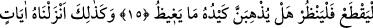
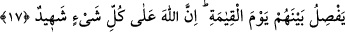

ALLAH HER ŞEYİ
HAKKIYLA BİLENDİR
14. Muhakkak ki Allah, îmân edip iyi davranışlarda bulunan kimseleri,
zemininden ırmaklar akan cennetlere kabul eder. Şüphesiz Allah dilediği şeyi
yapar.
15. Her kim, Allah’ın, dünya ve ahirette ona (Resûlüne) asla yardım
etmeyeceğini zannetmekte ise, (Allah ona yardım ettiğine göre) artık o kimse
tavana bir ip atsın; (boğazına geçirsin); sonra da (ayağını yerden) kessin! Şimdi bu
kimse baksın! Acaba, hilesi (bu yaptığı), öfke duyduğu şeyi (Allah’ın Peygamber’e
yardımını) gerçekten engelleyecek mi?
16. İşte böylece biz o Kur’an’ı açık seçik âyetler halinde indirdik. Gerçek şu ki
Allah dilediği kimseyi doğru yola sevkeder.
17. Mü’min olanlar, yahudi olanlar, sâbiîler, hıristiyanlar, mecûsîler ve müşrik
olanlara gelince, muhakkak ki Allah, bunlar arasında kıyâmet gününde (ayrı ayrı)
hükmünü verir. Çünkü Allah her şeyi hakkıyla bilendir.
“Muhakkak ki Allah, îmân edip iyi davranışlarda bulunan kimseleri, zemininden
ırmaklar akan cennetlere kabul eder.” Âyet kâfirlerin durumlarının kötülüğünün
açıklanmasının ardından Allah Teâlâ’ya ibâdet eden mü’minlerin hâlinin güzelliğinin
kemâlini beyan etmektedir. Cennet, sık ağaçları olan, ağaçları altında olanları örten
yerdir. “
(ırmak)” bol suyun aktığı yerdir. ‘Akma’nın ırmaklara isnâd edilmesi, ‘Oluk
aktı’ sözü gibi hükmî isnad kabilindendir. Çünkü akmak nehrin değil suyun
özelliklerindendir. Cennetlerin zemininden ırmaklar akan yerler olarak vasfedilmesi,
insanların mîzaclarının kendilerine meyletmesi için cennetlerin onların tanıdığı yerlerin